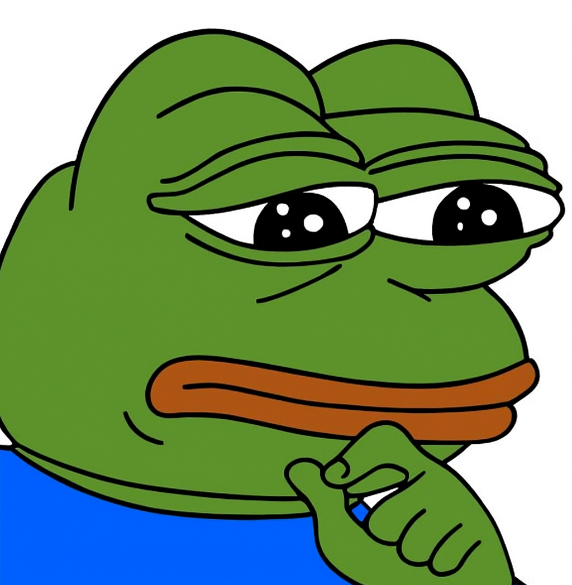

Why I Created This
This is what happens when I am bored and watch a youtube video at 3 am on website design. I was a good 75% done with my analyis but decided to scrap it and design this website instead. Also I did use AI for some of the images.
I hope you enjoy the 5 hours I spent on this website.
P.S. I am not a web designer, I just wanted to make something that looked nice and was easy to navigate. Also at the time I sent this I had only time to do one song I'll add more later and let you know when I do.
P.S.S. If you have any suggestions or feedback let me know.
